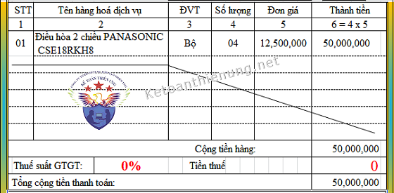
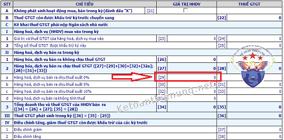
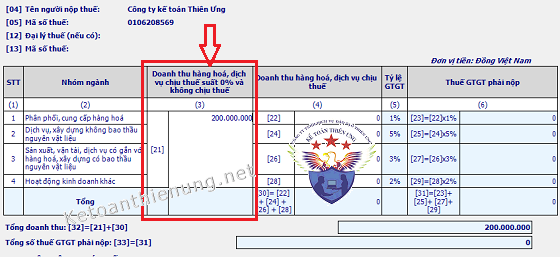

Hướng dẫn cách viết hóa đơn GTGT hàng xuất vào khu phi thuế quan (khu chế xuất); Cách viết hóa đơn Thương mại xuất khẩu ra nước ngoài. Cách kê khai thuế GTGT hàng xuất khẩu.
Trước khi đọc bài viết cách viết hóa đơn hàng xuất khẩu này, thì các bạn cần xác định được thế nào là hàng xuất khẩu; Hàng hóa, dịch vụ xuất khẩu gồm những gì? Điều kiện để áp dụng thuế suất 0% -> Tại vì phải xác định được việc đó thì mới xác định thuế suất là bao nhiêu % thì mới viết được hóa đơn và sử dụng loại hóa đơn gì.
Ví dụ: Cty A bán hàng cho Cty B trường hợp giao hàng ở trong Việt Nam, trường hợp giao hàng ở ngoài Việt Nam...
-----------------------------------------------------------------------------------------
Theo điều 3 Thông tư 39/2014/TT-BTC:
"Hóa đơn giá trị gia tăng (mẫu số 3.1 Phụ lục 3 và mẫu số 5.1 Phụ lục 5 ban hành kèm theo Thông tư 39/2014/TT-BTC) là loại hóa đơn dành cho các tổ chức khai, tính thuế GTGT theo phương pháp khấu trừ trong các hoạt động sau:
- Bán hàng hóa, cung ứng dịch vụ trong nội địa;
- Hoạt động vận tải quốc tế;
- Xuất vào khu phi thuế quan và các trường hợp được coi như xuất khẩu;
- Tổ chức, cá nhân khai, tính thuế GTGT theo phương pháp trực tiếp khi bán hàng hóa, dịch vụ trong nội địa, xuất vào khu phi thuế quan và các trường hợp được coi như xuất khẩu, xuất khẩu hàng hóa, cung ứng dịch vụ ra nước ngoài.
=> Thì sử dụng: HÓA ĐƠN BÁN HÀNG (mẫu số 3.2 Phụ lục 3 và mẫu số 5.2 Phụ lục 5 ban hành kèm theo Thông tư 39/2014/TT-BTC).
- Tổ chức, cá nhân trong khu phi thuế quan khi bán hàng hóa, cung ứng dịch vụ vào nội địa và khi bán hàng hóa, cung ứng dịch vụ giữa các tổ chức, cá nhân trong khu phi thuế quan với nhau, xuất khẩu hàng hóa, cung ứng dịch vụ ra nước ngoài, trên hóa đơn ghi rõ “Dành cho tổ chức, cá nhân trong khu phi thuế quan”
=> Thì sử dụng: HÓA ĐƠN BÁN HÀNG (Dùng cho tổ chức, cá nhân trong khu phi thuế quan) (mẫu số 5.3 Phụ lục 5 ban hành kèm theo Thông tư 39/2014/TT-BTC)."
------------------------------------------------------------------------------
Theo Khoản 7 Điều 3 Thông tư 119/2014/TT-BTC (sửa đổi bổ sung Thông tư số 219/2013/TT-BTC quy định:
“Hóa đơn thương mại. Ngày xác định doanh thu xuất khẩu để tính thuế là ngày xác nhận hoàn tất thủ tục hải quan trên tờ khai hải quan”.
Theo Công văn 483/TCT-CS ngày 6/2/2015 của Tổng cục thuế:
"Căn cứ các hướng dẫn nêu trên và theo trình bày của Cục Thuế tỉnh Bà Rịa - Vũng Tàu, trường hợp Công ty TNHH Vard Vũng Tàu thực hiện các hợp đồng đóng tàu cho khách hàng nước ngoài mà thời gian thực hiện hợp đồng dài, thời điểm nghiệm thu, bàn giao tàu là thời điểm giao tàu xuất khẩu đi nước ngoài thì:
- Trước 01/9/2014, Công ty TNHH Vard Vũng Tàu thực hiện lập hóa đơn GTGT, hóa đơn xuất khẩu tại thời điểm nghiệm thu, bàn giao tàu, xuất khẩu ra nước ngoài, Công ty ghi nhận doanh thu tính thuế TNDN căn cứ theo hóa đơn.
- Từ 01/9/2014, Công ty TNHH Vard Vũng Tàu không phải lập hóa đơn xuất khẩu mà sử dụng hóa đơn thương mại và xác định doanh thu xuất khẩu thực hiện theo quy định tại Khoản 7 Điều 3 Thông tư số 119/2014/TT-BTC nêu trên.
Thời điểm ghi nhận doanh thu tính thuế của hoạt động này là ngày xác nhận hoàn tất thủ tục hải quan trên tờ khai hải quan."
Công văn số 79581/CT-TTHT ngày 11/12/2017 của Cục Thuế TP. Hà Nội về hóa đơn hàng xuất khẩu:
"Căn cứ quy định trên, trường hợp Công ty của Độc giả mới thành lập và có hoạt động xuất khẩu trực tiếp hàng nông sản ra nước ngoài thì Công ty sử dụng hóa đơn thương mại khi xuất khẩu theo quy định."
Công văn 76605/CT-TTHT ngày 19/11/2018 của Cục thuế TP Hà Nội:
"Căn cứ các quy định trên, trường hợp Công ty đang sử dụng hóa đơn GTGT, Công ty phát sinh hoạt động xuất khẩu dịch vụ phần mềm cho tổ chức nước ngoài thì Công ty không cần phải lập hóa đơn GTGT cho hoạt động này.
Công ty lập hóa đơn thương mại theo hướng dẫn tại Khoản 7 Điều 3 Thông tư số 119/2014/TT-BTC của Bộ Tài chính nêu trên.
Trong quá trình thực hiện, nếu còn vướng mắc thì đề nghị Công ty liên hệ với Phòng Kiểm tra thuế số 1 để được hướng dẫn chi tiết."
-------------------------------------------------------------------------
Quy định về việc sử dụng hóa đơn khi xuất nhập khẩu tại chỗ:
Theo khoản 1, khoản 3 điều 86 Thông tư số 38/2015/TT-BTC quy định:
“Điều 86. Thủ tục hải quan đối với hàng hóa xuất khẩu, nhập khẩu tại chỗ
1. Hàng hóa xuất khẩu, nhập khẩu tại chỗ gồm:
a) Sản phẩm gia công; máy móc, thiết bị thuê hoặc mượn; nguyên liệu, vật tư dư thừa; phế liệu, phế phẩm thuộc hợp đồng gia công theo quy định tại khoản 3 Điều 32 Nghị định số 187/2013/NĐ-CP;
b) Hàng hóa mua bán giữa doanh nghiệp nội địa với doanh nghiệp chế xuất, doanh nghiệp trong khu phi thuế quan;
c) Hàng hóa mua bán giữa doanh nghiệp Việt Nam với tổ chức, cá nhân nước ngoài không có hiện diện tại Việt Nam và được thương nhân nước ngoài chỉ định giao, nhận hàng hóa với doanh nghiệp khác tại Việt Nam.
3. Hồ sơ hải quan
- Hồ sơ hải quan hàng hóa xuất khẩu, nhập khẩu tại chỗ thực hiện theo quy định tại Điều 16 Thông tư này.
- Trường hợp hàng hóa mua bán giữa doanh nghiệp nội địa và doanh nghiệp chế xuất, doanh nghiệp trong khu phi thuế quan thì người khai hải quan sử dụng hóa đơn giá trị gia tăng hoặc hóa đơn bán hàng theo quy định của Bộ Tài chính thay cho hóa đơn thương mại”.
Kết luận:
- Khi xuất khẩu hàng hóa, dịch vụ ra nước ngoài thì sử dụng hóa đơn thương mại.
- Khi bán hàng vào khu chế xuất, khu phi thuế quan thì sử dụng hóa đơn GTGT hoặc hóa đơn bán hàng.
- Thủ tục xuất nhập khẩu tại chỗ thuộc trường hợp quy định tại điểm a, điểm c điều 86 Thông tư 38/2015/TT-BTC nêu trên thì sử dụng hoá đơn thương mại.
- Thủ tục xuất nhập khẩu tại chỗ thuộc trường hợp quy định tại điểm b điều 86 Thông tư 38/2015/TT-BTC nêu trên thì sử dụng hoá đơn GTGT hoặc hoá đơn bán hàng.
VÍ DỤ:"Căn cứ các hướng dẫn nêu trên và theo trình bày của Cục Thuế tỉnh Bà Rịa - Vũng Tàu, trường hợp Công ty TNHH Vard Vũng Tàu thực hiện các hợp đồng đóng tàu cho khách hàng nước ngoài mà thời gian thực hiện hợp đồng dài, thời điểm nghiệm thu, bàn giao tàu là thời điểm giao tàu xuất khẩu đi nước ngoài thì:
- Trước 01/9/2014, Công ty TNHH Vard Vũng Tàu thực hiện lập hóa đơn GTGT, hóa đơn xuất khẩu tại thời điểm nghiệm thu, bàn giao tàu, xuất khẩu ra nước ngoài, Công ty ghi nhận doanh thu tính thuế TNDN căn cứ theo hóa đơn.
- Từ 01/9/2014, Công ty TNHH Vard Vũng Tàu không phải lập hóa đơn xuất khẩu mà sử dụng hóa đơn thương mại và xác định doanh thu xuất khẩu thực hiện theo quy định tại Khoản 7 Điều 3 Thông tư số 119/2014/TT-BTC nêu trên.
Thời điểm ghi nhận doanh thu tính thuế của hoạt động này là ngày xác nhận hoàn tất thủ tục hải quan trên tờ khai hải quan."
Công văn số 79581/CT-TTHT ngày 11/12/2017 của Cục Thuế TP. Hà Nội về hóa đơn hàng xuất khẩu:
"Căn cứ quy định trên, trường hợp Công ty của Độc giả mới thành lập và có hoạt động xuất khẩu trực tiếp hàng nông sản ra nước ngoài thì Công ty sử dụng hóa đơn thương mại khi xuất khẩu theo quy định."
------------------------------------------------------------------
Xuất khẩu dịch vụ phầm mềm sử dụng hóa đơn thương mại:Công văn 76605/CT-TTHT ngày 19/11/2018 của Cục thuế TP Hà Nội:
"Căn cứ các quy định trên, trường hợp Công ty đang sử dụng hóa đơn GTGT, Công ty phát sinh hoạt động xuất khẩu dịch vụ phần mềm cho tổ chức nước ngoài thì Công ty không cần phải lập hóa đơn GTGT cho hoạt động này.
Công ty lập hóa đơn thương mại theo hướng dẫn tại Khoản 7 Điều 3 Thông tư số 119/2014/TT-BTC của Bộ Tài chính nêu trên.
Trong quá trình thực hiện, nếu còn vướng mắc thì đề nghị Công ty liên hệ với Phòng Kiểm tra thuế số 1 để được hướng dẫn chi tiết."
-------------------------------------------------------------------------
Quy định về việc sử dụng hóa đơn khi xuất nhập khẩu tại chỗ:
Theo khoản 1, khoản 3 điều 86 Thông tư số 38/2015/TT-BTC quy định:
“Điều 86. Thủ tục hải quan đối với hàng hóa xuất khẩu, nhập khẩu tại chỗ
1. Hàng hóa xuất khẩu, nhập khẩu tại chỗ gồm:
a) Sản phẩm gia công; máy móc, thiết bị thuê hoặc mượn; nguyên liệu, vật tư dư thừa; phế liệu, phế phẩm thuộc hợp đồng gia công theo quy định tại khoản 3 Điều 32 Nghị định số 187/2013/NĐ-CP;
b) Hàng hóa mua bán giữa doanh nghiệp nội địa với doanh nghiệp chế xuất, doanh nghiệp trong khu phi thuế quan;
c) Hàng hóa mua bán giữa doanh nghiệp Việt Nam với tổ chức, cá nhân nước ngoài không có hiện diện tại Việt Nam và được thương nhân nước ngoài chỉ định giao, nhận hàng hóa với doanh nghiệp khác tại Việt Nam.
3. Hồ sơ hải quan
- Hồ sơ hải quan hàng hóa xuất khẩu, nhập khẩu tại chỗ thực hiện theo quy định tại Điều 16 Thông tư này.
- Trường hợp hàng hóa mua bán giữa doanh nghiệp nội địa và doanh nghiệp chế xuất, doanh nghiệp trong khu phi thuế quan thì người khai hải quan sử dụng hóa đơn giá trị gia tăng hoặc hóa đơn bán hàng theo quy định của Bộ Tài chính thay cho hóa đơn thương mại”.
--------------------------------------------------------------------------------------------------
Kết luận:
- Khi xuất khẩu hàng hóa, dịch vụ ra nước ngoài thì sử dụng hóa đơn thương mại.
- Khi bán hàng vào khu chế xuất, khu phi thuế quan thì sử dụng hóa đơn GTGT hoặc hóa đơn bán hàng.
- Thủ tục xuất nhập khẩu tại chỗ thuộc trường hợp quy định tại điểm a, điểm c điều 86 Thông tư 38/2015/TT-BTC nêu trên thì sử dụng hoá đơn thương mại.
- Thủ tục xuất nhập khẩu tại chỗ thuộc trường hợp quy định tại điểm b điều 86 Thông tư 38/2015/TT-BTC nêu trên thì sử dụng hoá đơn GTGT hoặc hoá đơn bán hàng.
-------------------------------------------------------------------------------------------------
- Cty Kế toán Diệu Tâm là doanh nghiệp khai thuế GTGT theo phương pháp khấu trừ:
- Nếu bán hàng trong nước: => Thì sử dụng hóa đơn GTGT cho hoạt động bán hàng trong nước.
- Nếu xuất khẩu hàng hóa ra nước ngoài => Thì sử dụng hóa đơn Thương mại cho hoạt động xuất khẩu ra nước ngoài.
- Nếu bán hàng vào trong khu phi thuế quan => Thì sử dụng hóa đơn GTGT cho hoạt động bán hàng vào khu phi thuế quan.
-------------------------------------------------------------------------------
- Doanh nghiệp D là doanh nghiệp khai thuế GTGT theo phương pháp trực tiếp:- Nếu bán hàng hóa, dịch vụ trong nước: => Thì sử dụng hóa đơn bán hàng
- Nếu xuất khẩu hàng hóa ra nước ngoài: => Thì sử dụng hóa đơn Thương mại cho hoạt động xuất khẩu hàng hóa ra nước ngoài.
- Nếu bán hàng hóa cho khu phi thuế quan: => Thì sử dụng hóa đơn bán hàng.
-----------------------------------------------------------------------------
- Doanh nghiệp C là doanh nghiệp chế xuất:- Nếu bán hàng vào nội địa và bán hàng hóa ra nước ngoài (ngoài lãnh thổ Việt Nam) => Thì sử dụng hóa đơn bán hàng, trên hóa đơn ghi rõ “Dành cho tổ chức, cá nhân trong khu phi thuế quan”.
-------------------------------------------------------------------------------------------------------
Hóa đơn thương mại thì DN tự thiết kế (các bạn có thể lên mạng để xem Mẫu hóa đơn thương mại) và không phải làm thủ tục thông báo phát hành hóa đơn, không phải báo cáo tình hình sử dụng hóa đơn cho cơ quan thuế.
-------------------------------------------------------------------------------
2. Cách viết hóa đơn hàng xuất khẩu
Cách viết hóa đơn hàng xuất khẩu vào khu phi thuế quan (Chế xuất)
Theo khoản 2 Điều 4 Thông tư 39/2014/TT-BTC
"Đối với hóa đơn GTGT, ngoài dòng đơn giá là giá chưa có thuế GTGT, phải có dòng thuế suất thuế GTGT, tiền thuế GTGT, tổng số tiền phải thanh toán ghi bằng số và bằng chữ."
Như vậy:
- Khi xuất khẩu hàng hóa vào khu phi thuế quan thì DN sử dụng hóa đơn GTGT (nếu là DN kê khai theo pp khấu trừ), để làm căn cứ mở Tờ khai hải quan: -> Trên hóa đơn sẽ ghi thuế suất như sau:
- Dòng thuế suất thuế GTGT ghi: 0%
- Dòng tiền thuế GTGT ghi: 0

----------------------------------------------------------------------------------------
Lưu ý:
- Trường hợp người bán được thu bằng ngoại tệ theo quy định của pháp luật thì mới được viết Đồng tiền ngoại tệ trên hóa đơn nhé.
- Trường hợp người bán được thu bằng ngoại tệ theo quy định của pháp luật thì mới được viết Đồng tiền ngoại tệ trên hóa đơn nhé.
- Nếu xuất khẩu hàng ra nước ngoài các bạn sử dụng hóa đơn Thương mại (Invoice) + Phiếu xuất kho để làm căn cứ mở Tờ khai hải quan. (hóa đơn thương mại các bạn lập và lưu nội bộ nhé)
- Nếu là DN kê khai thuế GTGT theo pp trực tiếp thì các bạn xuất hóa đơn bán hàng như bình thường thôi nhé (Vì trên hóa đơn đó không có thuế GTGT).
- Nếu là DN kê khai thuế GTGT theo pp trực tiếp thì các bạn xuất hóa đơn bán hàng như bình thường thôi nhé (Vì trên hóa đơn đó không có thuế GTGT).
------------------------------------------------------------------------
3. Hướng dẫn kê khai thuế GTGT hàng xuất khẩu:
Căn cứ các quy định trên, từ ngày 01/9/2014 khi xuất khẩu dịch vụ qua phương tiện thương mại điện tử ra nước ngoài Công ty sử dụng hóa đơn thương mại.
- Khi kê khai trên Bảng kê hóa đơn, chứng từ hàng hóa, dịch vụ bán ra mẫu số 01-1/GTGT: số, ngày tháng của hóa đơn là số, ngày tháng của hóa đơn thương mại.
- Từ ngày 01/01/2015 bỏ bảng kê và các phụ lục kèm theo Tờ khai thuế GTGT mẫu số 01/GTGT.
-> Do đó Công ty không phải kê hóa đơn thương mại trên bảng kê mà chỉ kê khai doanh thu của hóa đơn thương mại vào tờ khai 01/GTGT.
(Theo Công văn 2783/CT-TTHT ngày 30/3/2015 của Cục thuế HCM)
---------------------------------------------------------------------------------------------
-> Cụ thể kê khai như sau:
a) Nếu DN kê khai thuế GTGT theo pp khấu trừ:
- Các bạn kê khai hóa đơn thương mại (hoặc hóa đơn GTGT) đó vào Chỉ tiêu 29 - Hàng hóa, dịch vụ bán ra chịu thuế suất 0% trên Tờ khai 01/GTGT
(Vì theo quy định tại điều 9 Thông tư 219: Thuế suất 0% áp dụng đối với hàng hóa, dịch vụ xuất khẩu)
a) Nếu DN kê khai thuế GTGT theo pp khấu trừ:
- Các bạn kê khai hóa đơn thương mại (hoặc hóa đơn GTGT) đó vào Chỉ tiêu 29 - Hàng hóa, dịch vụ bán ra chịu thuế suất 0% trên Tờ khai 01/GTGT
(Vì theo quy định tại điều 9 Thông tư 219: Thuế suất 0% áp dụng đối với hàng hóa, dịch vụ xuất khẩu)

----------------------------------------------------------------------------------------------------------
b) Nếu DN kê khai thuế GTGT theo pp trực tiếp:
- Các bạn kê khai hóa đơn thương mại (hoặc hóa đơn bán hàng) đó vào Chỉ tiêu 21 - Doanh thu hàng hóa, dịch vụ chịu thuế suất 0% và không chịu thuế trên Tờ khai 04/GTGT.

Xem thêm: Cách kê khai thuế GTGT hàng xuất khẩu
Thời điểm kê khai thuế GTGT hàng xuất khẩu:
- Trường hợp Công ty xuất khẩu lô hàng cho doanh nghiệp chế xuất và lập hóa đơn GTGT thuế suất 0% cho lô hàng trên vào ngày 30/03/2019 nhưng ngày xác nhận, hoàn tất thủ tục trên tờ khai hải quan là ngày 05/04/2019.
-> Thì thời điểm kê khai thuế GTGT và thời điểm xác định doanh thu xuất khẩu để tính thuế là tháng 04/2019 (trường hợp kê khai thuế GTGT theo tháng).
(Theo Công văn 26986/CT-TTHT ngày 26/4/2019 của Cục Thuế TP. Hà Nội)
-----------------------------------------------------------------------------------------------
4. Cách hạch toán hàng xuất khẩu:
- Cách hạch toán tỷ giá để xác định doanh thu, ngày xác định doanh thu hàng xuất khẩu ... các bạn xem tại đây nhé:
Chi tiết: Cách hạch toán hàng xuất khẩu
__________________________________________________
Kế toán Diệu Tâm chúc các bạn thành công!
Nếu bạn muốn học lên Báo cáo tài chính, Quyết toán thuế ...Có thể tham gia Khóa học thực hành kế toán tổng hợp.
---------------------------------------------------------------